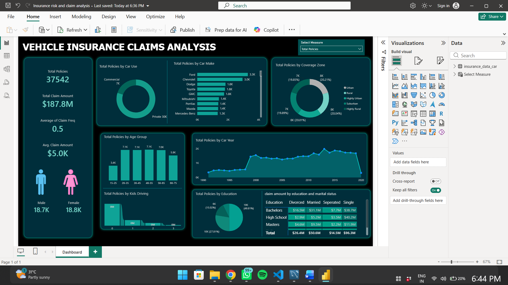

Total Policies
37,542
Exploring insurance policies, customer demographics, vehicle characteristics and claim patterns through an interactive business intelligence dashboard.
Summary metrics from the displayed dashboard. Values may vary when report filters are applied.
A consolidated visual view of policy distribution, customer segments, vehicle categories and insurance claim amounts.

Preview image of the Power BI report. This image is not an interactive Power BI report.
Insurance teams need a clear view of their policy portfolio and claim patterns. This project brings multiple categories together to support exploratory analysis and reporting.
Technologies used in developing and presenting the project. Keep this list aligned with the work actually completed.
The dashboard helps users compare policy distribution and explore claim amounts across available customer and vehicle categories, identifying areas that may need further analysis.